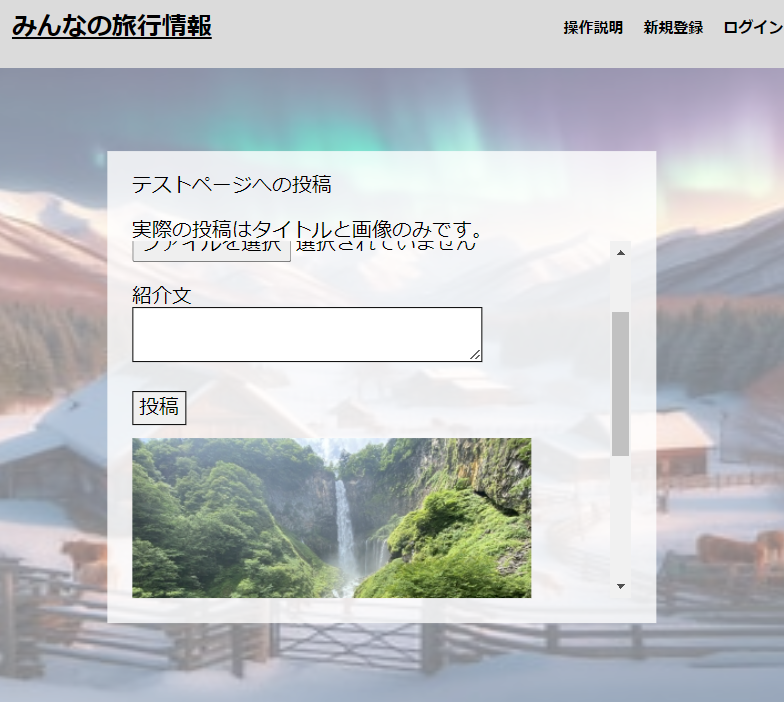

-
概要
制作時間 30時間 URL https://mapappu.onrender.com ID admin PASS 1111
OUTLINEアプリケーションの概要
プログラミングスクールの最終課題制作としてフリーマーケットのアプリケーションを作成後、オリジナルアプリ第一弾として作成しました。
ユーザーを登録すると旅行先が投稿できるようになります、操作方法はトップページのヘッダーにある操作説明をご覧ください。
-
開発で苦労したこと
初めての完全自作なのでいくつかあるアイディアから簡単なものを選択したつもりが以外とview/htmlの記述を書き直しながら制作になって奥が深いと感じながら苦労をしました。
ブラウザの拡大縮小に対してのデザインを変化させない方法の検討に予想以上に時間がかかった。
-
今後実装したいと思っていること
いいね機能の実装と投稿ごとにコメントできる機能の実装を行いたいです。
新幹線駅ごとに作り直して、検索機能もつけてより探しやすいようにしたいです。